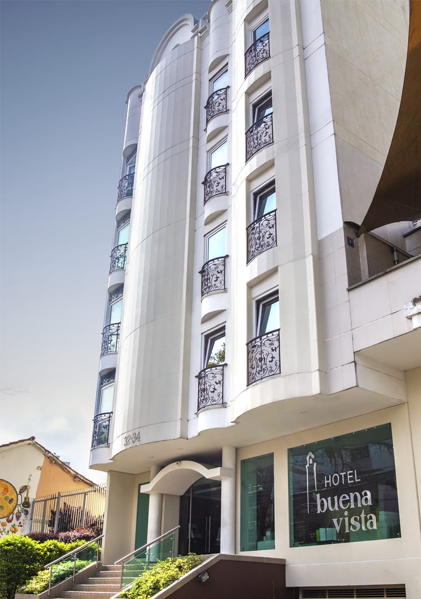
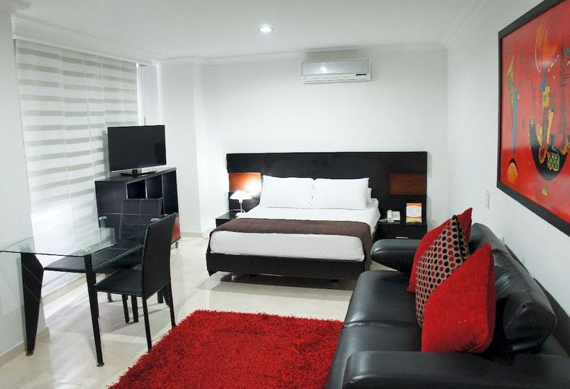
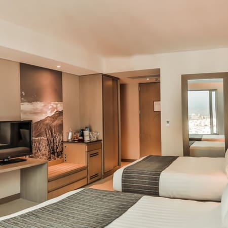

<!DOCTYPE html>
<html lang="en">
<head>
    <meta charset="UTF-8">
    <meta http-equiv="X-UA-Compatible" content="IE=edge">
    <meta name="viewport" content="width=device-width, initial-scale=1.0">
    <title>hoteles</title>
</head>
<body>
    
</body>
</html>


<body>

    <header>
        <h2><center>CONTACTO</center> </h2> <br>
        <nav>
            <table align="center">
            <tr >
                <td > <a href="../perfil/registro.html"> |Registro|</a></td>
                <td> <a href="../perfil/login.html"> |Iniciar sesion|</a></td>
                <td ><form action="../buscar/buscar.html"> 
                    <input type="search" placeholder="Ingrese una palabra clave">		    	
                    <button >Buscar</button></form>                        
                </td>
            </tr>            
        </table></nav>
    </header> 

        <nav>
            <ul>
                <br><li><h2>Hotel Chicamocha ★★★★★</h2>
                    <h4>Calle 34 No. 31 -24, 680010 Bucaramanga, Colombia</h4>
                </li>
            <table>
                <tr>

                    <td> 
                        <p align="justify"> El Hotel Chicamocha ofrece habitaciones modernas con WiFi gratuita en el centro de Bucaramanga, a 30 minutos en coche del aeropuerto de Palonegro. </p>
                        <p align="justify"> El establecimiento ofrece gimnasio, servicio de masajes y descuentos para el club de golf Ruitoque.</p>
                        <p align="justify"> Las habitaciones del Hotel Chicamocha son luminosas y están decoradas con ropa de cama en tonos verde lima y suelo de baldosa blanca. 
                        <p align="justify"> Disponen de cama grande, TV LCD y zona de estar. En algunas habitaciones hay zona de comedor.</p>
                        <p align="justify"> El restaurante del Hotel Chicamocha, de estilo buffet, sirve especialidades italianas y el bar ofrece cócteles exóticos. </p>
                        <p align="justify"> Por las mañanas se sirve un desayuno con fruta fresca, zumos naturales y productos de repostería.</p>
                        <p align="justify"> El Hotel Chicamocha cuenta con recepción las 24 horas, donde se puede organizar un servicio de enlace con el aeropuerto. 
                        <p align="justify"> Además, hay aparcamiento gratuito y centro de negocios.</p>
                        </td> </tr></table>

                    <tr>
                    <td>  
                    </td>
                    <td>  
                     </td>
                     <td>  
                     </td>                

                </tr>
                </table>
                <table>
                    <tr>
                        <td> 
                            <video position="right" src="../recursos/videos/Chicamocha.mp4" autoplay muted loop width="1055"></video>
                        </td>    
                    </tr>
                </table><br><br><br>

            <li><h2>Hotel Buena Vista Express ★★★</h2>
                <h4>Diag 15 No. 58-40 Bucaramanga, 680010 Bucaramanga, Colombia</h4>
            </li>
            
            <table>
                <tr>
                    <td> 
                        <p align="justify"> El Hotel Buena Vista Express ofrece conexión Wi-Fi gratuita y un desayuno bufé en Bucaramanga.También cuenta con piscina al aire libre y alberga un restaurante.</p>
                        <p align="justify"> El centro comercial Cacique está a 7 minutos en coche y el aeropuerto Palonegro, a 20 minutos en coche. </p>
                        <p align="justify"> Las habitaciones del Buena Vista Express se encuentran en un entorno tranquilo y tienen baño privado, TV por cable de pantalla plana, minibar y aire acondicionado.</p>
                        <p align="justify"> Asimismo, el Buena Vista Express dispone de servicio de habitaciones y de aparcamiento gratuito.</p>
                        <p align="justify"> El Hotel Buena Vista Express se halla a tan solo 10 minutos en coche de los parques de San Pío y Las Palmas y a 2 horas en coche del parque nacional del Chicamocha.</p>
                 
                        </td> </tr></table>            
            <table>
                <tr>
                    <td>  
                    </td>
                    <td>  
                     </td>
                     <td>  
                     </td>                    

                </tr>
                </table>
                <table>
                    <tr>

                        <td> 
                            <video src="../recursos/videos/BuenaVista.mp4" autoplay muted loop width="1055"></video>
                        </td>
    
                    </tr>


                </table></li><br><br><br>

                <li><h2>Ayenda 1511 Sevilla Plaza ★★</h2> 
                    <h4>Calle 34 No. 13-51, 680005 Bucaramanga, Colombia </h4>
                </li>
            
                <table>
                    <tr>
    
                        <td> 
                            <p align="justify"> El Ayenda 1511 Sevilla Plaza se encuentra en el centro de Bucaramanga, a 100 metros del ayuntamiento.
                            <p align="justify"> Ofrece gimnasio, sauna, un restaurante y habitaciones con conexión Wi-Fi gratuita y TV de plasma. Hay aparcamiento gratuito y se sirven desayunos. 
                            <p align="justify"> Las habitaciones del Sevilla Plaza disponen de muebles de madera, minibar y teléfono. Algunas tienen aire acondicionado.
                            <p align="justify"> Por las mañanas se sirve un desayuno. El restaurante del hotel prepara platos regionales.
                            <p align="justify"> Los huéspedes pueden disfrutar del gimnasio y la sauna. También hay una sala de juegos con ping pong y billar.
                            <p align="justify"> Los huéspedes pueden disfrutar del gimnasio y la sauna. También hay una sala de juegos con ping pong y billar.
                            <p align="justify"> El Ayenda 1511 Sevilla Plaza se encuentra a 20 metros del periódico Vanguardia Liberal y a 30 minutos en coche del aeropuerto internacional de Palonegro.</p> 
                                
                            </p>
                            </td> </tr></table>
                
                <table>
                    <tr>
                        <td>  
                        </td>
                        <td>  
                         </td>
                         <td>  
                         </td>                        
    
                    </tr>                   
    
                    <table>
                        <tr>    
                            <td> 
                                <video src="../recursos/videos/SevillaPlaza.mp4" autoplay muted loop width="1055"></video>
                            </td>        
                        </tr>
                    </table>    
            </ul>
            </nav>
            <br><br><br>
     
            <section align="center">
                <footer>
                    <h3>______________________________</h3>
                    <address>
                        <a href="../index.html">Inicio</a>
                    </address>
                    <address>
                        <a href="../contacto/contacto.html">Contacto</a><br><br>
                    </address>
                </footer>
            </section>
   
    
</body>
</html>
